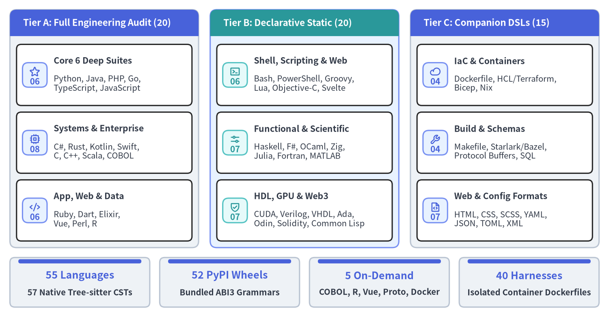
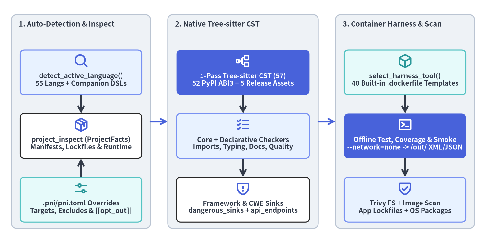

Supported 55 Languages Matrix
pni501 (v0.2.0) delivers deterministic static CST analysis (ProjectFacts and unified 1-pass TreeCursor-indexed native tree-sitter CST, replacing ast-grep-py), language-specific engineering rules, isolated container test/coverage harnesses (40 built-in .dockerfile templates), and Trivy supply-chain scanning across 55 programming, scripting, HDL, and companion DSL languages powered by 57 native tree-sitter grammars.

Source Code
from drawlib.canvas import save, setup
from drawlib.icons import phosphor
from drawlib.smartarts import CardList, KpiCards, Panel
from drawlib.styles import Styles
setup(width=184, height=96, dpi=150)
t1_panel = Panel(
"Tier A: Full Engineering Audit (20)",
header_variant="filled",
header_height=8.0,
style=Styles.Neutral.patch(shape_r=2.0),
header_style=Styles.PrimaryFlat,
text_style=Styles.WhiteBold.patch(text_size=10.8),
)
t1_panel.draw(xy=(3.0, 21.0), width=57.0, height=72.0)
t1_cards = CardList(
style=Styles.WhiteBordered.patch(shape_r=1.4),
text_style=Styles.DarkBold.patch(text_size=10.2),
description_style=Styles.Dark.patch(text_size=9.8),
badge_shape="rounded_rect",
badge_style=Styles.PrimaryNeutral,
badge_text_style=Styles.PrimaryBold.patch(text_size=10.0),
icon_style=Styles.PrimaryBold,
direction="vertical",
spacing=2.0,
)
t1_cards.add(
"Core 6 Deep Suites",
"Python, Java, PHP, Go,\nTypeScript, JavaScript",
badge_text="06",
icon=phosphor.star,
)
t1_cards.add(
"Systems & Enterprise",
"C#, Rust, Kotlin, Swift,\nC, C++, Scala, COBOL",
badge_text="08",
icon=phosphor.cpu,
)
t1_cards.add(
"App, Web & Data",
"Ruby, Dart, Elixir,\nVue, Perl, R",
badge_text="06",
icon=phosphor.code,
)
t1_cards.draw(xy=(5.0, 23.0), width=53.0, height=59.5)
t2_panel = Panel(
"Tier B: Declarative Static (20)",
header_variant="filled",
header_height=8.0,
style=Styles.PrimaryNeutral.patch(shape_r=2.0),
header_style=Styles.SecondaryFlat,
text_style=Styles.WhiteBold.patch(text_size=10.8),
)
t2_panel.draw(xy=(63.5, 21.0), width=57.0, height=72.0)
t2_cards = CardList(
style=Styles.WhiteBordered.patch(shape_r=1.4),
text_style=Styles.DarkBold.patch(text_size=10.2),
description_style=Styles.Dark.patch(text_size=9.8),
badge_shape="rounded_rect",
badge_style=Styles.SecondaryNeutral,
badge_text_style=Styles.SecondaryBold.patch(text_size=10.0),
icon_style=Styles.SecondaryBold,
direction="vertical",
spacing=2.0,
)
t2_cards.add(
"Shell, Scripting & Web",
"Bash, PowerShell, Groovy,\nLua, Objective-C, Svelte",
badge_text="06",
icon=phosphor.terminal_window,
)
t2_cards.add(
"Functional & Scientific",
"Haskell, F#, OCaml, Zig,\nJulia, Fortran, MATLAB",
badge_text="07",
icon=phosphor.sliders_horizontal,
)
t2_cards.add(
"HDL, GPU & Web3",
"CUDA, Verilog, VHDL, Ada,\nOdin, Solidity, Common Lisp",
badge_text="07",
icon=phosphor.shield_check,
)
t2_cards.draw(xy=(65.5, 23.0), width=53.0, height=59.5)
t3_panel = Panel(
"Tier C: Companion DSLs (15)",
header_variant="filled",
header_height=8.0,
style=Styles.Neutral.patch(shape_r=2.0),
header_style=Styles.PrimaryFlat,
text_style=Styles.WhiteBold.patch(text_size=10.8),
)
t3_panel.draw(xy=(124.0, 21.0), width=57.0, height=72.0)
t3_cards = CardList(
style=Styles.WhiteBordered.patch(shape_r=1.4),
text_style=Styles.DarkBold.patch(text_size=10.2),
description_style=Styles.Dark.patch(text_size=9.8),
badge_shape="rounded_rect",
badge_style=Styles.PrimaryNeutral,
badge_text_style=Styles.PrimaryBold.patch(text_size=10.0),
icon_style=Styles.PrimaryBold,
direction="vertical",
spacing=2.0,
)
t3_cards.add(
"IaC & Containers",
"Dockerfile, HCL/Terraform,\nBicep, Nix",
badge_text="04",
icon=phosphor.cloud,
)
t3_cards.add(
"Build & Schemas",
"Makefile, Starlark/Bazel,\nProtocol Buffers, SQL",
badge_text="04",
icon=phosphor.wrench,
)
t3_cards.add(
"Web & Config Formats",
"HTML, CSS, SCSS, YAML,\nJSON, TOML, XML",
badge_text="07",
icon=phosphor.file_code,
)
t3_cards.draw(xy=(126.0, 23.0), width=53.0, height=59.5)
footer = KpiCards(
style=Styles.Neutral.patch(shape_r=1.5),
metric_style=Styles.PrimaryBold.patch(text_size=12.0),
text_style=Styles.DarkBold.patch(text_size=9.8),
accent_style=Styles.PrimaryFlat,
accent_position="top_bar",
metric_layout="top_stack",
spacing=3.0,
)
footer.add("55 Languages", "57 Native Tree-sitter CSTs")
footer.add("52 PyPI Wheels", "Bundled ABI3 Grammars")
footer.add("5 On-Demand", "COBOL, R, Vue, Proto, Docker")
footer.add("40 Harnesses", "Isolated Container Dockerfiles")
footer.draw(xy=(3.0, 3.0), width=178.0, height=15.0, columns=4)
save()
1. Three-Tier 55-Language Architecture (57 Native Tree-sitter Grammars)
All 55 languages are declared in a single source-of-truth registry (src/pni/_languages/registry.py) and parsed through the unified 1-pass tree-sitter CST layer (src/pni/_actions/ast_analyze/_cst.py). Two languages register paired dialect grammars — PHP (php + php_only) and TypeScript (typescript + tsx, shared with JavaScript) — totaling 57 native tree-sitter grammars.
| Tier | Scope & Count | Analyzer & Runtime Capabilities | Languages Included |
|---|---|---|---|
| Tier A — Full Engineering Audit | 20 languages (full_audit) |
Full manifest/lockfile parsing, deep native CST checks (6 core custom multi-checker suites + 14 extended Tier A suites), isolated offline container harnesses (20/20), Trivy scanning, and 6–8 rule files each. |
Python, Java, PHP, Go, TypeScript, JavaScript, C#, Rust, Ruby, Kotlin, Swift, C, C++, Scala, Dart, Elixir, Vue, Perl, COBOL, R |
| Tier B — Declarative Static Audit | 20 languages (static_audit) |
Unified declarative Tree-sitter CST static analysis (unit complexity, doc/comment hygiene, type/contract checks, CWE security sinks), 6 rule files each, plus built-in container harnesses for 15 ecosystems (Bash, PowerShell, Groovy, Lua, Haskell, F#, OCaml, Zig, Julia, Fortran, Svelte, Verilog, VHDL, Ada, Common Lisp). |
Bash/Shell, PowerShell, Groovy, Objective-C, Lua, Haskell, F#, OCaml, Zig, Julia, Fortran, MATLAB, Svelte, Solidity, CUDA, Verilog/SystemVerilog, VHDL, Ada, Odin, Common Lisp |
| Tier C — Companion IaC / Schema / Build / Config | 15 languages (companion_dsl) |
Automatic companion language scanning alongside any primary Tier A/B repository (companion_ast_facts) as well as standalone audits, 6 rule files each, targeting IaC security, container hardening, schema hygiene, and build determinism. |
Dockerfile, HCL/Terraform, Bicep, Nix, Makefile, Starlark/Bazel, Protocol Buffers, SQL, HTML, CSS, SCSS, YAML, JSON, TOML, XML |
1.1 Tier A Deep-Dive Matrix (Core 6 + Extended 14)
The six core Tier A ecosystems ship bespoke 9-checker LanguageAnalyzerSuite implementations, while the fourteen extended Tier A ecosystems pair unified declarative CST checkers with language-specific manifests, lockfiles, rules, and container harnesses:
Language (id) |
Primary Manifests & Lockfiles | Extensions | Container Harness Template (.pni/dockerfiles/) |
|---|---|---|---|
Python (python) |
pyproject.toml, setup.py, uv.lock, poetry.lock |
.py |
python/uv.dockerfile, poetry.dockerfile, pip.dockerfile |
Java (java) |
pom.xml, build.gradle(.kts), gradle.lockfile |
.java |
java/maven.dockerfile, gradle.dockerfile |
PHP (php) |
composer.json, composer.lock, artisan, wp-config.php |
.php, .phtml |
php/composer.dockerfile, raw.dockerfile |
Go (go) |
go.mod, go.work, go.sum |
.go |
go/go.dockerfile |
TypeScript (typescript) |
tsconfig.json, package.json, pnpm-lock.yaml, package-lock.json |
.ts, .tsx |
typescript/node.dockerfile |
JavaScript (javascript) |
jsconfig.json, package.json, pnpm-lock.yaml, yarn.lock |
.js, .jsx, .mjs, .cjs |
javascript/node.dockerfile |
C# (csharp) |
*.csproj, *.sln, Directory.Build.props, packages.lock.json |
.cs |
csharp/dotnet.dockerfile |
Rust (rust) |
Cargo.toml, Cargo.lock |
.rs |
rust/cargo.dockerfile |
Ruby (ruby) |
Gemfile, Gemfile.lock, Rakefile, *.gemspec |
.rb, .rake |
ruby/bundler.dockerfile |
Kotlin (kotlin) |
build.gradle.kts, pom.xml, gradle.lockfile |
.kt, .kts |
kotlin/gradle.dockerfile, maven.dockerfile |
Swift (swift) |
Package.swift, Package.resolved |
.swift |
swift/swiftpm.dockerfile |
C (c) |
CMakeLists.txt, Makefile, meson.build |
.c, .h |
c/cmake.dockerfile |
C++ (cpp) |
CMakeLists.txt, conanfile.*, vcpkg.json |
.cpp, .cc, .cxx, .hpp, .hh, .hxx |
cpp/cmake.dockerfile |
Scala (scala) |
build.sbt |
.scala, .sc |
scala/sbt.dockerfile |
Dart (dart) |
pubspec.yaml, pubspec.lock |
.dart |
dart/pub.dockerfile |
Elixir (elixir) |
mix.exs, mix.lock |
.ex, .exs |
elixir/mix.dockerfile |
Vue (vue) |
nuxt.config.*, vue.config.js, package.json |
.vue |
vue/node.dockerfile (on-demand grammar) |
Perl (perl) |
cpanfile, cpanfile.snapshot, Makefile.PL, Build.PL |
.pl, .pm, .t |
perl/cpan.dockerfile |
COBOL (cobol) |
Source-detected (*.cob, *.cbl, *.cpy) |
.cob, .cbl, .cpy |
cobol/gnucobol.dockerfile (on-demand grammar) |
R (r) |
DESCRIPTION, NAMESPACE, renv.lock |
.r |
r/r.dockerfile (on-demand grammar) |
2. On-Demand GitHub Releases ABI3 Grammar Distribution
To keep pni501 distributed as a single lightweight pure-Python (py3-none-any) wheel while still providing full cross-platform native tree-sitter CST parsing across Linux, macOS, and Windows, grammar loading follows a hybrid two-source architecture (src/pni/_languages/_grammar_assets.py):
- 52 Bundled PyPI
abi3Wheels: Fifty-two Tree-sitter grammars are installed automatically via standardtree-sitter-*PyPIabi3wheels (source="package"), requiring zero C compiler at install time. - 5 On-Demand GitHub Releases Grammars (SHA-256 Verified): Five MIT-licensed grammars that lack complete 3-OS prebuilt PyPI wheels — COBOL (
cobol), R (r), Vue (vue), Protocol Buffers (protobuf/ assetproto), and Dockerfile (dockerfile) — are compiled automatically via GitHub Actions across 5 ABI3 platforms (linux_x86_64,linux_aarch64,macos_arm64,macos_x86_64, andwindows_amd64) and published under GitHub Releases (grammars-v0.2.0).- Lazy Download & Pinned Integrity: On first parse of any
.cob,.r,.vue,.proto, orDockerfilefile,pni501downloads the exact platform archive over HTTPS, verifies its pinned SHA-256 digest before extraction, and caches the compiled extension (_*.abi3.soor_*.pyd) using thread + advisory file locks (PNI_GRAMMAR_CACHE_DIR->pni/_cached_grammars-> OS user cache~/.cache/pni501/grammarsor%LOCALAPPDATA%\pni501\grammars). - Offline / Air-Gapped CI Management: Pre-populate or audit cached grammars anytime with the
pni grammarsCLI:
- Lazy Download & Pinned Integrity: On first parse of any
# Inspect platform tag, release tag, cache status, and pinned SHA-256 prefixes
pni grammars status
# Pre-download all 5 release-managed grammars (or specific ones) for offline CI/containers
pni grammars prefetch --all
pni grammars prefetch dockerfile vue protobuf --force
# Clear locally cached release-managed grammar binaries
pni grammars clear
3. Deterministic Language Auto-Detection & Sandboxed Execution
When you run pni init, pni rules list, or execute a workflow step, detect_active_language() in src/pni/_rules/manager.py resolves the repository's primary language (and companion Tier C DSLs) deterministically without manual flags:
- Core & Extended Manifest Inspection: Evaluates top-level build manifests in deterministic priority order across Python, Java, PHP, Go, Node.js (
tsconfig.json/"typescript"->typescript,jsconfig.json->javascript), and extended Tier A/B ecosystems (Cargo.toml,*.csproj,Gemfile,Package.swift,build.sbt,pubspec.yaml,mix.exs,nuxt.config.*,cpanfile,DESCRIPTION,stack.yaml,dune-project,build.zig,Project.toml,fpm.toml,foundry.toml,alire.toml, etc.). - Source Tree Extension Fallback: Walks repository source directories (pruning
.git,node_modules,vendor,target,.venv,.pni,.drawlib) to detect manifest-less languages (e.g., C, COBOL, Bash, Verilog, VHDL, CUDA, Odin) before defaulting topython. - Companion DSL & Polyglot Rollup Detection:
pni workflows planautomatically discovers monorepo components and Tier C companion files (Dockerfile, Terraform.tf,.proto,.sql,.yaml,Makefile,BUILD.bazel) so cross-cutting IaC and schema checks run alongside the primary language audit.

Source Code
from drawlib.canvas import save, setup
from drawlib.diagrams.architecture import ArchitectureDiagram, Node, NodeGroup, PhosphorIcon
from drawlib.styles import Styles
setup(width=168, height=84, dpi=150)
diag = ArchitectureDiagram(
node_style=Styles.PrimaryBold,
node_text_style=Styles.DarkBold.patch(text_size=10.0),
edge_style=Styles.DarkBold,
edge_text_style=Styles.DarkBold.patch(text_size=9.8),
node_card_style=Styles.WhiteBordered.patch(shape_r=1.5),
)
g_detect = diag.add(
NodeGroup(
title="1. Auto-Detection & Inspect",
width=48.0,
height=74.0,
style=Styles.Neutral.patch(shape_r=2.0),
text_style=Styles.DarkBold.patch(text_size=10.5, halign="left", valign="top"),
),
xy=(4.0, 5.0),
)
n_manifest = g_detect.add(
Node(
"detect_active_language()\n55 Langs + Companion DSLs",
width=42.0,
height=15.5,
icon=PhosphorIcon.MAGNIFYING_GLASS,
icon_size=5.2,
card_style=Styles.PrimaryNeutral.patch(shape_r=1.5),
),
xy=(24.0, 54.0),
)
n_inspect = g_detect.add(
Node(
"project_inspect (ProjectFacts)\nManifests, Lockfiles & Runtime",
width=42.0,
height=15.5,
icon=PhosphorIcon.PACKAGE,
icon_size=5.2,
),
xy=(24.0, 32.0),
)
n_pni_toml = g_detect.add(
Node(
".pni/pni.toml Overrides\nTargets, Excludes & [[opt_out]]",
width=42.0,
height=15.5,
icon=PhosphorIcon.SLIDERS_HORIZONTAL,
icon_size=5.2,
style=Styles.SecondaryBold,
card_style=Styles.SecondaryNeutral.patch(shape_r=1.5),
),
xy=(24.0, 10.0),
)
g_ast = diag.add(
NodeGroup(
title="2. Native Tree-sitter CST",
width=52.0,
height=74.0,
style=Styles.Neutral.patch(shape_r=2.0),
text_style=Styles.DarkBold.patch(text_size=10.5, halign="left", valign="top"),
),
xy=(58.0, 5.0),
)
n_suite = g_ast.add(
Node(
"1-Pass Tree-sitter CST (57)\n52 PyPI ABI3 + 5 Release Assets",
width=46.0,
height=15.5,
icon=PhosphorIcon.TREE_STRUCTURE,
icon_size=5.2,
style=Styles.WhiteBold,
text_style=Styles.WhiteBold.patch(text_size=10.0),
card_style=Styles.PrimaryFlat.patch(shape_r=1.5),
),
xy=(26.0, 54.0),
)
n_checkers = g_ast.add(
Node(
"Core + Declarative Checkers\nImports, Typing, Docs, Quality",
width=46.0,
height=15.5,
icon=PhosphorIcon.LIST_CHECKS,
icon_size=5.2,
card_style=Styles.PrimaryNeutral.patch(shape_r=1.5),
),
xy=(26.0, 32.0),
)
n_sec_ast = g_ast.add(
Node(
"Framework & CWE Sinks\ndangerous_sinks + api_endpoints",
width=46.0,
height=15.5,
icon=PhosphorIcon.SHIELD_WARNING,
icon_size=5.2,
),
xy=(26.0, 10.0),
)
g_runtime = diag.add(
NodeGroup(
title="3. Container Harness & Scan",
width=48.0,
height=74.0,
style=Styles.Neutral.patch(shape_r=2.0),
text_style=Styles.DarkBold.patch(text_size=10.5, halign="left", valign="top"),
),
xy=(116.0, 5.0),
)
n_select = g_runtime.add(
Node(
"select_harness_tool()\n40 Built-in .dockerfile Templates",
width=42.0,
height=15.5,
icon=PhosphorIcon.CUBE,
icon_size=5.2,
style=Styles.SecondaryBold,
card_style=Styles.SecondaryNeutral.patch(shape_r=1.5),
),
xy=(24.0, 54.0),
)
n_offline = g_runtime.add(
Node(
"Offline Test, Coverage & Smoke\n--network=none -> /out/ XML/JSON",
width=42.0,
height=15.5,
icon=PhosphorIcon.TERMINAL_WINDOW,
icon_size=5.2,
style=Styles.WhiteBold,
text_style=Styles.WhiteBold.patch(text_size=10.0),
card_style=Styles.PrimaryFlat.patch(shape_r=1.5),
),
xy=(24.0, 32.0),
)
n_trivy = g_runtime.add(
Node(
"Trivy FS + Image Scan\nApp Lockfiles + OS Packages",
width=42.0,
height=15.5,
icon=PhosphorIcon.SHIELD_CHECK,
icon_size=5.2,
card_style=Styles.PrimaryNeutral.patch(shape_r=1.5),
),
xy=(24.0, 10.0),
)
diag.connect(n_manifest, n_inspect, routing="orthogonal")
diag.connect(n_pni_toml, n_inspect, routing="orthogonal")
diag.connect(n_suite, n_checkers, routing="orthogonal")
diag.connect(n_checkers, n_sec_ast, routing="orthogonal")
diag.connect(n_select, n_offline, routing="orthogonal")
diag.connect(n_offline, n_trivy, routing="orthogonal")
diag.connect(g_detect, g_ast, routing="orthogonal", style=Styles.PrimaryBold)
diag.connect(g_ast, g_runtime, routing="orthogonal", style=Styles.PrimaryBold)
diag.draw(xy=(0.0, 0.0))
save()
3.1 Language-Specific CST Checkers & CWE Security Sinks
Every source file is parsed once into a TreeCursor-indexed native Tree-sitter CST (src/pni/_actions/ast_analyze/_cst.py) and dispatched across nine specialized checker categories (imports, typing, docs, quality, dependencies, testing, framework, operational, and security):
| Ecosystem | Typing & Contract Signals | Code Quality & Operational Signals | Framework & CWE Security Sinks (dangerous_sinks) |
|---|---|---|---|
| Python | Public parameter/return annotation %, Any / bare type: ignore, py.typed marker |
isort import grouping, Google/NumPy/Sphinx docstrings + Args: sync, McCabe (>7) & cognitive (>15) complexity, mutable defaults, bare except:, missing timeout= |
FastAPI on_event, missing response_model, sync I/O inside async def; eval/exec (CWE-94), subprocess(..., shell=True) (CWE-78), pickle/yaml.load (CWE-502), raw SQL f-strings (CWE-89) |
| Java | Generic type safety %, raw types (List without <T>), unscoped @SuppressWarnings |
Wildcard import .*, Javadoc coverage & @param alignment, mutable public static fields, empty catch blocks, System.out.println in services |
Spring Boot @Autowired field injection, non-public @Transactional, javax.* vs jakarta.*; Runtime.exec (CWE-78), ObjectInputStream.readObject (CWE-502), string-concatenated JDBC/JPQL (CWE-89) |
| PHP | declare(strict_types=1) ratio, parameter/return/property type hints, unscoped @phpstan-ignore |
PSR-4 namespace vs include/require_once, mixed HTML/PHP spaghetti, $_GET/$_POST/$GLOBALS coupling, @ error suppression, die()/exit(), magic-hash == |
Laravel env() outside config/, mass-assignment $guarded = [], raw DB::raw(); WordPress unescaped $_GET SQLi/XSS & missing check_admin_referer; eval/shell_exec/unserialize (CWE-94/78/502) |
| Go | Concrete/generic types vs untyped any / interface{} (exempting format string, ...any), unsafe.Pointer, bare //nolint |
gofmt/import grouping, dot imports (import .), GoDoc on exported symbols, ignored error assignments (_ = err, val, _ := ...), panic() in non-main, defer in loops |
Gin/Echo/Fiber/Chi/net-http route extraction (api_endpoints), exec.Command("sh", "-c", ...) (CWE-78), formatted db.Query(fmt.Sprintf(...)) (CWE-89), HTTP client without Timeout |
| TypeScript / JavaScript | tsconfig.json "strict": true, explicit export types / JSDoc @param, companion .d.ts credit, : any / @ts-ignore |
ES module hygiene, barrel type_checking_cycles separation, TSDoc/JSDoc coverage, ES2022 #private, IIFE/UMD unwrapping, unhandled Promises, var & == |
Express/Fastify/NestJS/Hono/Next.js route discovery, dangerouslySetInnerHTML / innerHTML (CWE-79), eval / new Function (CWE-94), child_process.exec (CWE-78), SQL template literals (CWE-89) |
| Extended Tier A/B & Tier C DSLs | Declarative CST function/method signature typing, unsafe casts/blocks (unsafe, void*, raw pointers), schema/field contracts |
Unified declarative CST complexity, function length/parameters, import graph & cycle extraction, doc-comment coverage, error-handling hygiene | Language-specific command/code/SQL injection sinks, memory-unsafe C/C++/CUDA APIs, Solidity reentrancy/tx.origin, Dockerfile USER root/unpinned base images, Terraform/Bicep open ingress & hardcoded secrets |
See Rules & CLI Reference for the complete catalog of 356 built-in rule files, 182 action templates, 112 workflow templates, .pni/ local override cascade, and all pni CLI commands, or explore Analyzers & Live Pentest for deep dives into containerized runtime and DAST verification.